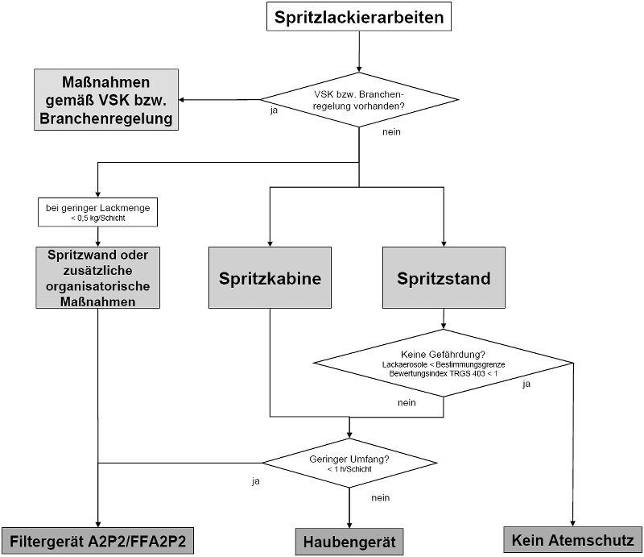

Im Auswahlschema sind die grundsätzlichen Möglichkeiten zur Auswahl von Lüftung und Atemschutzgerät gemäß den Regelungen in den Abschnitten 3.1 und 3.2 zusammenfassend dargestellt.
Die Detailanforderungen sind dem Text des Abschnittes 3 zu entnehmen.